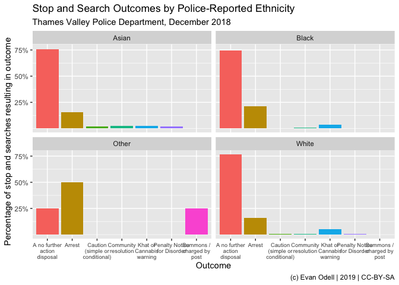

The ukpolice package downloads data from the UK Police public data API, the full docs of which are available at https://data.police.uk/docs/.
Data is available on police forces, crimes, policing areas and stop-and-search. All functions begin with ukc_.
The example below queries stop and searches by the Thames Valley Police in December 2018, and plots them by police-reported ethnic group.
library(ukpolice)
library(ggplot2)
library(dplyr)
tv_ss <- ukc_stop_search_force("thames-valley", date = "2018-12")
tv_ss2 <- tv_ss %>%
filter(!is.na(officer_defined_ethnicity) & outcome != "" ) %>%
group_by(officer_defined_ethnicity, outcome) %>%
summarise(n = n()) %>%
mutate(perc = n/sum(n))
p1 <- ggplot(tv_ss2, aes(x = outcome, y = perc,
group = outcome, fill = outcome)) +
geom_col(position = "dodge") +
scale_y_continuous(labels = scales::percent,
breaks = seq(0.25, 0.8, by = 0.25)) +
scale_x_discrete(labels = scales::wrap_format(15)) +
theme(legend.position = "none", axis.text.x = element_text(size = 8)) +
labs(x = "Outcome",
y = "Percentage of stop and searches resulting in outcome",
title = "Stop and Search Outcomes by Police-Reported Ethnicity",
subtitle = "Thames Valley Police Department, December 2018",
caption = "(c) Evan Odell | 2019 | CC-BY-SA") +
facet_wrap(~officer_defined_ethnicity)
p1